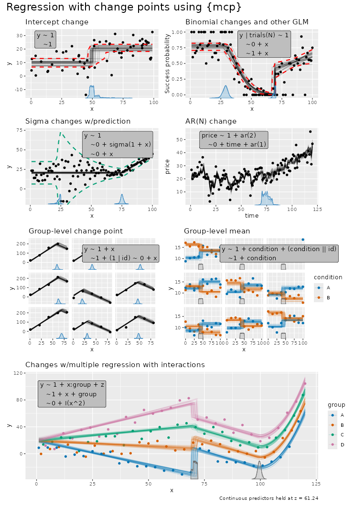

mcp takes a list of formulas, and defines the change
point as the point on the x-axis where the data shifts from being
generated by one formula to the next. So with N formulas,
you have N - 1 change points. A list with just one formula
thus corresponds to normal regression with 0 change points.
The formulas are called “segments” because they divide the (observed)
x-axis into N segments. Here are some examples:

Formula format for segments
The three formula parts are called response,
cp, and predictor. The general format
is response ~ cp ~ predictor, except for the first segment,
which has no change point and therefore uses
response ~ predictor. In later segments the response is
assumed identical and may be omitted. A one-sided formula such as
~ x also uses the default change-point formula
~ 1, so it is shorthand for y ~ 1 ~ 1 + x.
This is familiar from
lm()/glm()/brms::brm().
mcp models consist of three parts:
1. Response (segment 1 only):
-
y ~ ...: Standard continuous or count response (Gaussian, Poisson, Bernoulli). -
successes | trials(total) ~ ...: Binomial response (family = binomial()). -
y | weights(w) ~ ...: Observation log-likelihood weights (multiplies each observation’s log-likelihood contribution byw > 0; affects posterior inference andlog_lik(), but not predictions). -
y | trials(total) + weights(w) ~ ...: Combine response auxiliaries using+.
2. Change-point modeling (cp, segments
2+):
-
~ 1 ~ ...(or omitted, e.g.,~ x): Population-level change point (default). -
1 + (1 | id) ~ ...: Group-level change-point deviations around the population change point (read more).
3. Regression formula (all segments):
-
~ 1 + x: Disjoined slope with a new segment intercept. -
~ 0 + x: Joined slope (no intercept; continuous from previous segment). -
~ 1: Plateau (intercept only, no slope). -
~ x:condition + z + (1 | id): Additional covariates, interactions, and group-level effects (read more). -
+ sigma(1 + x)orshape(0 + condition): Distributional parameters on the link scale (read more). -
+ ar(1)orma(2, 1 + x): Autoregressive and moving-average time-series residuals on the link scale (usear(0)orma(0)to turn off in later segments; read more).
mcp is heavily inspired by brms which again
is inspired by lme4::lmer()
which extends lm() and glm(). Here
is a bit of history on that.
How terms persist into later segments
When defining multiple segments in mcp, you only need to
specify what changes:
1. Slopes on x are segment-local: The change-point predictor x is measured from each change point onset (\tau_{k-1}). Writing
+ xdefines a slope in that segment; omitting x yields a flat plateau (slope on x is zero). Joined segments (~ 0 ...) connect continuously, while disjoined segments (~ 1 ...) jump to a new intercept.2. Non-x terms persist forward: Terms other than x start in the segment where they are declared and persist into later segments:
Omitted non-x terms PERSIST from the previous segment.
Repeated non-x terms REPLACE earlier terms (and repeating with zero turns them off).
A new intercept RESETS the population formula, removing omitted terms.
Examples: Persistence into later segments and parameter names
mcp automatically assigns names to the parameters in the
format type_i where i is the segment number.
Change points are named cp_1, cp_2, …, where
cp_1 separates segment 1 and 2, cp_2 separates
segment 2 and 3, etc.
# 1. Slope transitions on x: joined (~ 0) vs. disjoined (~ 1)
list(
y ~ 1 + x, # Segment 1: Intercept_1, x_1
~ 0 + x, # Segment 2 (starts at cp_1): Joined slope x_2 (connects continuously)
~ 1 + x, # Segment 3 (starts at cp_2): Disjoined slope x_3; Intercept_3 jumps
~ 0, # Segment 4 (starts at cp_3): Joined plateau; slope on x is zero (omitted x)
~ 1 # Segment 5 (starts at cp_4): Disjoined plateau; Intercept_5 jumps (omitted x)
)
# 2. Covariates: persist into later segments until reset
list(
y ~ 1 + x + z, # Intercept_1, x_1, z_1
~ 0 + x, # Joined: x_2 starts; z_1 persists into segment 2 (evaluated on observation's z_i)
~ 0 + x + z, # Joined: x_3 starts; z_3 replaces z_1 with an absolute new slope
~ 1 + x # Disjoined: Intercept_4 and x_4 start; z is removed by intercept reset
)
# 3. Categorical factors: dummy coefficients persist into later segments
list(
y ~ 1 + condition, # Intercept_1, conditionB_1, conditionC_1
~ 0, # Joined: all dummies persist into segment 2 (flat continuation)
~ 0 + condition, # Joined: conditionB_3, conditionC_3 replace previous dummies
~ 1 # Disjoined: Intercept_4 starts; condition is removed by intercept reset
)
# 4. Distributional regression and time series persist independently
list(
y ~ 1 + x + sigma(1 + x) + ar(1), # Intercept_1, x_1, sigma_1, sigma_x_1, ar1_1
~ 0 + x, # Joined: x_2 starts; sigma() and ar() persist into segment 2 unchanged
~ 1 + x + ar(2), # Disjoined: Intercept_3, x_3; sigma persists; ar1_3 and ar2_3 replace AR(1)
~ 0 + x + ar(0) # Joined: x_4 starts; ar(0) explicitly turns AR off
)
# 5. Group-level effects and offsets persist until explicitly turned off
list(
y ~ 1 + x + (1 | id) + offset(log(exposure)), # Intercept_1, x_1, Intercept_1_id, exposure offset
~ 0 + x, # Joined: x_2 starts; group effect and offset persist into segment 2
~ 1 + x + (0 | id) + offset(0) # Disjoined: Intercept_3, x_3; (0 | id) and offset(0) turn off group effect and offset
)As shown above, terms not affected by the population intercept can be
turned off anywhere by replacing them with zero:
(0 | group), offset(0), or ar(0)
/ ma(0).
You can inspect the parameters in any model without sampling using
mcp_pars():
library(mcp)
model = list(
y ~ 1 + x, # Segment 1: Intercept_1, x_1
~ 0 + x, # Segment 2: x_2 joined
~ 1 # Segment 3: Intercept_3 disjoined plateau
)
fit = mcp(model, data = data.frame(y = 1:10, x = 1:10), sample = FALSE)
mcp_pars(fit)## # A tibble: 7 × 9
## name part scope role segment dpar order group_col population_name
## <chr> <chr> <chr> <chr> <int> <chr> <int> <chr> <chr>
## 1 cp_1 cp popu… chan… 2 cp NA NA NA
## 2 cp_2 cp popu… chan… 3 cp NA NA NA
## 3 Intercept_1 predict… popu… fixe… 1 mu NA NA NA
## 4 x_1 predict… popu… fixe… 1 mu NA NA NA
## 5 x_2 predict… popu… fixe… 2 mu NA NA NA
## 6 Intercept_3 predict… popu… fixe… 3 mu NA NA NA
## 7 sigma_1 predict… popu… dpar… 1 sigma NA NA NAModeling intercept change points
A change point is simply like an ifelse statement or
multiplying with indicators (0s and 1s):
# Model parameters
x = 1:20
cp_1 = 12
Intercept_1 = 5
Intercept_2 = 10
# Ifelse version
y_ifelse = ifelse(x <= cp_1, yes = Intercept_1, no = Intercept_2)
# Indicator equivalent using dummy helpers
cp_0 = -Inf
cp_2 = Inf
y_indicator = (x > cp_0) * (x <= cp_1) * Intercept_1 + # Between cp_0 and cp_1
(x > cp_1) * (x <= cp_2) * Intercept_2 # Between cp_1 and cp_2
# Show it
par(mfrow = c(1,2))
plot(x, y_ifelse, main = "ifelse(x <= cp_1)")
plot(x, y_indicator, main = "(x > cp_1) * Intercept_2")The magic of (Bayesian) MCMC sampling is that it can actually infer
the change point from this simple formulation. We let mcp
write the JAGS code for this simple two-plateaus model and see how it
uses the indicator formulation of change points:
model = list(y ~ 1, ~ 1)
fit = mcp(model, data = data.frame(y = 1:10, x = 1:10), sample = FALSE, par_x = "x")
fit$jags_code## model {
## # mcp helper values
## cp_0 = CONST1_
## cp_2 = CONST2_
##
## # Priors for population-level effects
## cp_frac_1_ ~ dbeta(1, 1) # Relative fraction of remaining span (Uniform order statistics)
## cp_1 = cp_0 + cp_frac_1_ * (cp_2 - cp_0) # Ordered change point
## Intercept_1 ~ dt(5.5, 1/(3.7)^2, 3) # Robustly centered mean intercept with a minimum scale of 2.5
## Intercept_2 ~ dt(5.5, 1/(3.7)^2, 3) # Robustly centered mean intercept with a minimum scale of 2.5
## sigma_1 ~ dt(0, 1/(3.7)^2, 3) T(0.001,) # Positive residual SD calibrated on the response scale
##
## # Model and likelihood
## for (i_ in 1:length(x)) {
## # par_x local to each segment
## x_local_1_[i_] = min(x[i_], cp_1)
## x_local_2_[i_] = min(x[i_], cp_2) - cp_1
##
## # Formula for mu
## link_mu_[i_] =
## (x[i_] >= cp_0) * (x[i_] < cp_1) * inprod(rhs_matrix_[i_, c(1)], c(Intercept_1)) * 1 +
## (x[i_] >= cp_1) * inprod(rhs_matrix_[i_, c(2)], c(Intercept_2)) * 1
##
## # Formula for sigma
## link_sigma_[i_] =
## (x[i_] >= cp_0) * inprod(rhs_matrix_[i_, c(3)], c(sigma_1)) * 1
##
## # Likelihood and log-density for family = gaussian()
## mu_[i_] = link_mu_[i_]
## sigma_[i_] = max(1e-03, link_sigma_[i_])
## y[i_] ~ dnorm(mu_[i_], 1 / sigma_[i_]^2)
## }
## }Look at the section under the comment # Formula for mu
which is the (automatically generated) model that was discussed above.
Some unnecessary stuff is added to segment 1 just because it makes the
code easier to generate. (x[i_] >= cp_0 when
cp_0 is the smallest value of x is, of course,
always true).
Modeling slope change points
Mathematically, an mcp model divides the continuous
predictor x into K segments separated by ordered change points
\tau_1 < \dots < \tau_{K-1}. In
each segment k \in \{1, \dots, K\}, the
linear predictor \eta_i on the link
scale is evaluated directly from the segment-local distance (x_i - \tau_{k-1}):
\eta_i = \alpha_k + \beta_{k,1} \, (x_i - \tau_{k-1}) \quad (\text{with } \tau_0 = 0)
where the segment-start level \alpha_k is freely estimated for the first and disjoined segments, as in non-segmented regression, and determined by continuity for joined segments:
\alpha_k = \begin{cases} \beta_{k,0}, & \text{Disjoined segments } (\sim \texttt{1 + x}, \text{ including } k = 1) \\ \alpha_{k-1} + \beta_{k-1,1} (\tau_{k-1} - \tau_{k-2}), & \text{Joined segments } (k \ge 2, \, \sim \texttt{0 + x}) \end{cases}
Here, \beta_{k,0} is the
segment-start intercept, and \beta_{k,1} is the slope on x. In all segments, estimated slope and
intercept parameters are absolute values (not changes relative to
preceding segments). If additional continuous covariates or categorical
factors are included (e.g., + z + group), they enter
additively on their original scale (+ \sum
\gamma_{k,j} z_{j,i} for covariate j); only the change-point predictor x is converted to segment-local
coordinates.
How mcp implements this in JAGS using indicators
Bayesian MCMC samplers like JAGS cannot evaluate dynamic conditional
statements (if/else) on parameters being sampled. To
implement this piecewise model in JAGS, mcp uses an
indicator and plateauing formulation (evaluated via
Iverson brackets [A] which equal 1 when
true and 0 when false).
First, mcp defines a segment-local span X_{k,i} that grows linearly within segment
k and stays constant beyond it:
X_{1,i} = \min(x_i, \tau_1) X_{k,i} = \max\bigl(0, \min(x_i, \tau_k) - \tau_{k-1}\bigr) \quad (k \ge 2)
When x_i < \tau_{k-1}, X_{k,i} = 0 (before the segment). When \tau_{k-1} \le x_i < \tau_k, X_{k,i} = x_i - \tau_{k-1} (linear growth within the segment). When x_i \ge \tau_k, X_{k,i} = \tau_k - \tau_{k-1} (constant segment width).
For a purely joined model
(list(y ~ 0 + x, ~ 0 + x)), mcp writes \eta_i as a cumulative sum of these segment
spans:
\eta_i = \sum_{k=1}^K [x_i \ge \tau_{k-1}] \cdot \beta_{k,1} X_{k,i}
Because each segment’s contribution stays constant beyond its change point (\beta_{k-1,1}(\tau_{k-1} - \tau_{k-2})), continuity is automatic with zero parameter constraints: preceding segments provide the continuous starting level for subsequent segments. The expected response on the response scale is \mu_i = g^{-1}(\eta_i) via link function g(\mu_i) = \eta_i (identity for Gaussian, so \mu_i = \eta_i).
When a segment is disjoined (~ 1 + x),
it introduces a new explicit intercept \beta_{k,0} at \tau_{k-1}, and earlier terms are capped with
[x_i < \tau_{\text{next}}] so
previous segments stop accumulating.
Let’s demonstrate this equivalence in R:
# Model parameters
x = 1:20
cp_1 = 12
slope_1 = 2
slope_2 = -1
# Ifelse version
y_ifelse = ifelse(x <= cp_1,
yes = slope_1 * x,
no = cp_1 * slope_1 + slope_2 * (x - cp_1))
# Indicator version with local plateauing coordinates (pmin is vectorized min)
y_local = slope_1 * pmin(x, cp_1) +
(x > cp_1) * slope_2 * (x - cp_1)
# Show that both formulations are identical
par(mfrow = c(1,2))
plot(x, y_ifelse, main = "ifelse() version")
plot(x, y_local, main = "Local plateauing coordinate")
Let us see this in action:
model = list(y ~ 0 + x,
~ 0 + x)
fit = mcp(model, data = data.frame(y = 1:10, x = 1:10), sample = FALSE)
fit$jags_code## model {
## # mcp helper values
## cp_0 = CONST1_
## cp_2 = CONST2_
##
## # Priors for population-level effects
## cp_frac_1_ ~ dbeta(1, 1) # Relative fraction of remaining span (Uniform order statistics)
## cp_1 = cp_0 + cp_frac_1_ * (cp_2 - cp_0) # Ordered change point
## x_1 ~ dt(0, 1/(0.4111111)^2, 3) # Regularizing mean coefficient scaled to a reference predictor change
## x_2 ~ dt(0, 1/(0.4111111)^2, 3) # Regularizing mean coefficient scaled to a reference predictor change
## sigma_1 ~ dt(0, 1/(3.7)^2, 3) T(0.001,) # Positive residual SD calibrated on the response scale
##
## # Model and likelihood
## for (i_ in 1:length(x)) {
## # par_x local to each segment
## x_local_1_[i_] = min(x[i_], cp_1)
## x_local_2_[i_] = min(x[i_], cp_2) - cp_1
##
## # Formula for mu
## link_mu_[i_] =
## (x[i_] >= cp_0) * inprod(rhs_matrix_[i_, c(1)], c(x_1)) * x_local_1_[i_] +
## (x[i_] >= cp_1) * inprod(rhs_matrix_[i_, c(2)], c(x_2)) * x_local_2_[i_]
##
## # Formula for sigma
## link_sigma_[i_] =
## (x[i_] >= cp_0) * inprod(rhs_matrix_[i_, c(3)], c(sigma_1)) * 1
##
## # Likelihood and log-density for family = gaussian()
## mu_[i_] = link_mu_[i_]
## sigma_[i_] = max(1e-03, link_sigma_[i_])
## y[i_] ~ dnorm(mu_[i_], 1 / sigma_[i_]^2)
## }
## }Look at the JAGS code under
# par_x local to each segment and
# Formula for mu to see this exact indicator formulation in
action: x_local_1_[i_] and x_local_2_[i_]
correspond to X_{1,i} and X_{2,i}, and each segment’s slope is
multiplied by its activation indicator (e.g.,
(x[i_] >= cp_1)).
You will find the exact same formula for y_ = ... if you
do print(fit$simulate), though this function contains a
whole lot of other stuff too.
Multiple regression and categorical predictors
mcp supports standard R formulas with multiple
continuous covariates, categorical factors, and interaction terms (e.g.,
x:group, + group, + z,
I(x^2)).
Let’s inspect the model in the overview plot at the top of this page
- except I added one plateau segment (~1) below to
illustrate a point.
# Define model with multiple predictors
model = list(
y ~ 1 + x:group + z, # Segment 1: by-group slopes on x, covariate z
~ 1 + x + group, # Segment 2: shared slope on x, by-group intercepts
~ 0 + I(x^2), # Segment 3: "group" intercepts persist due to "0"
~ 1 # Segment 4: collapse to shared intercept, no matter group
)
# Load data and inspect parameters without sampling
ex = mcp_example("multiple", sample = FALSE)
fit = mcp(model, data = ex$data, par_x = "x", sample = FALSE)
mcp_pars(fit)## # A tibble: 17 × 9
## name part scope role segment dpar order group_col population_name
## <chr> <chr> <chr> <chr> <int> <chr> <int> <chr> <chr>
## 1 cp_1 cp popu… chan… 2 cp NA NA NA
## 2 cp_2 cp popu… chan… 3 cp NA NA NA
## 3 cp_3 cp popu… chan… 4 cp NA NA NA
## 4 Intercept_1 predic… popu… fixe… 1 mu NA NA NA
## 5 z_1 predic… popu… fixe… 1 mu NA NA NA
## 6 xgroupA_1 predic… popu… fixe… 1 mu NA NA NA
## 7 xgroupB_1 predic… popu… fixe… 1 mu NA NA NA
## 8 xgroupC_1 predic… popu… fixe… 1 mu NA NA NA
## 9 xgroupD_1 predic… popu… fixe… 1 mu NA NA NA
## 10 Intercept_2 predic… popu… fixe… 2 mu NA NA NA
## 11 x_2 predic… popu… fixe… 2 mu NA NA NA
## 12 groupB_2 predic… popu… fixe… 2 mu NA NA NA
## 13 groupC_2 predic… popu… fixe… 2 mu NA NA NA
## 14 groupD_2 predic… popu… fixe… 2 mu NA NA NA
## 15 xE2_3 predic… popu… fixe… 3 mu NA NA NA
## 16 Intercept_4 predic… popu… fixe… 4 mu NA NA NA
## 17 sigma_1 predic… popu… dpar… 1 sigma NA NA NAKey features of multiple regression models in mcp:
-
Common change points across categories: The change
points
cp_1andcp_2are estimated as single locations shared across all levels ofgroup. (If you instead want category-specific change-point locations that deviate per group, use group-level effects like1 + (1|group) ~ ...; see group-level effects). -
Parameter names across segments: In segment 1,
xgroupA_1throughxgroupD_1represent separate slopes for each level ofgroup. In segment 2,groupB_2,groupC_2, andgroupD_2represent intercept offsets relative to the reference levelgroupA. The continuous slopez_1on covariatezpersists into later segments unless replaced or removed by an intercept reset. -
Plotting and prediction: Visualize by group using
plot(fit, color_by = "group")orplot(fit, facet_by = "group"). By default, other unplotted continuous predictors (likez) are held at their mean automatically byinterpolate_newdata(), or can be set explicitly viaplot(fit, color_by = "group", at = list(z = 0)).
Transformations are not segment-local
Transformations such as sin() and poly() in
formulas are evaluated on the original predictor values, as in
lm() and glm(). The change-point predictor is
the exception: bare par_x and polynomial bases such as
I(par_x^2) use distance from the segment onset
(change-point location, i.e., cp_i values).
For example, assuming that x is par_x:
Relative changes between segments
Parameters in mcp represent the absolute values within
each segment (e.g., time_2 is the slope in segment 2 and
time_3 is the slope in segment 3). To evaluate the
relative change between segments, you can use
hypothesis() for quick estimates or use
as_draws_df() to work with the distribution.
First, using hypothesis():
hypothesis(demo_fit, "time_3 > time_2")## hypothesis mean lower upper prob BF
## 1 time_3 - time_2 > 0 -0.6323957 -0.8068299 -0.4923073 0 0The estimate reflects the difference time_3 - time_2
(how much steeper or flatter the slope became in segment 3), along with
its credibility interval, posterior probability, and directional Bayes
factor. Read more about hypothesis
testing in the comparison article. Here, we see that
time_3 is -0.76 greater (i.e., it is smaller than
time_2).
If you need the full posterior distribution of the change (e.g., for
quantile(), hist(), or plotting with
ggplot2), extract draws, e.g., using
as_draws_df():
draws = as_draws_df(demo_fit) |>
dplyr::mutate(diff_time = time_3 - time_2)
head(draws)## # A draws_df: 6 iterations, 1 chains, and 8 variables
## Intercept_1 Intercept_3 cp_1 cp_2 sigma_1 time_2 time_3 diff_time
## 1 10.2 16 31 72 4.5 0.51 0.077 -0.44
## 2 9.9 16 31 70 3.6 0.51 -0.047 -0.56
## 3 9.4 17 31 71 3.6 0.51 -0.078 -0.59
## 4 10.8 17 32 71 3.4 0.54 -0.075 -0.61
## 5 9.3 19 33 73 3.8 0.59 -0.178 -0.77
## 6 9.3 17 30 72 4.0 0.54 -0.113 -0.65
## # ... hidden reserved variables {'.chain', '.iteration', '.draw'}You can now use diff_time directly with base R functions
like quantile(draws$diff_time, c(0.025, 0.975)) and
hist(draws$diff_time).